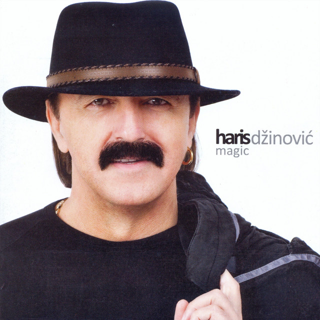
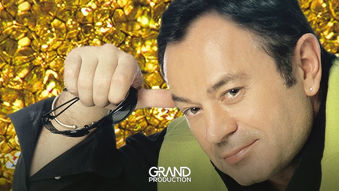
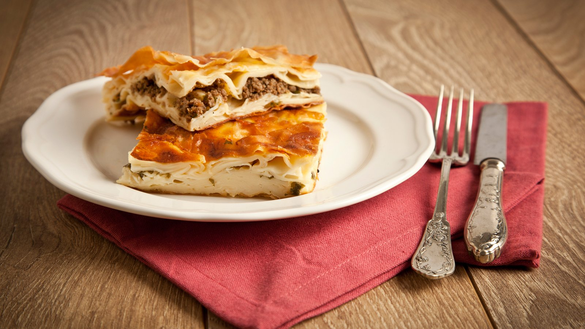
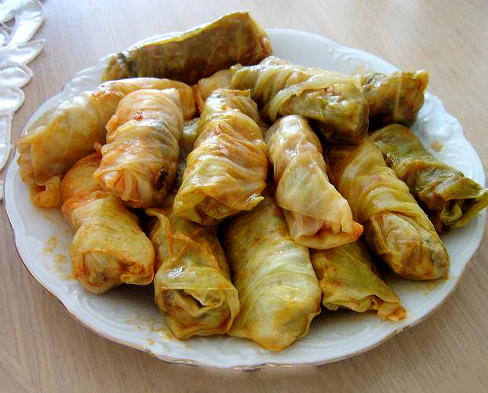

Cevape, diese kleinen, würzigen Fleischröllchen, sind für mich nicht einfach nur eine Speise, sondern ein Fest der Sinne. Ursprünglich aus dem Balkan stammend, haben sie sich zu einem kulinarischen Juwel entwickelt, das meinen Gaumen bei jedem Biss verzaubert. Die Mischung aus hochwertigem Hackfleisch, feinen Gewürzen und der Kunst des Grillens macht jedes Cevapcici zu einem kleinen Meisterwerk. Der zarte Rauchgeschmack und die saftige Konsistenz sind ein wahres Geschmackserlebnis. Egal, ob mit Ajvar, Zwiebeln oder in einem Fladenbrot – Cevape sind für mich nicht nur ein Gericht, sondern eine Liebeserklärung an die Freude des Essens und die Vielfalt der Aromen. Ein einfacher Genuss, der Erinnerungen an gemütliche Grillabende und gesellige Momente weckt.
Bosnien I Herzegovina
Bosnien, ein Land von atemberaubender Schönheit und faszinierender Geschichte, zieht mich immer wieder in seinen Bann. Mit seinen majestätischen Bergen, klaren Flüssen und malerischen Städten erzählt Bosnien eine Geschichte von kultureller Vielfalt und lebendiger Tradition.
Die herzliche Gastfreundschaft der Menschen spiegelt sich in jedem Lächeln wider, das man auf den Straßen Sarajevos oder in den kleinen Dörfern des Landes begegnet. Hier verbinden sich unterschiedliche Kulturen und Religionen zu einem einzigartigen Mosaik, das die reiche Geschichte des Landes widerspiegelt.
Die Altstadt von Mostar mit ihrer berühmten Brücke, ein Symbol der Überwindung von Unterschieden, fasziniert mich jedes Mal aufs Neue. Die multikulturelle Atmosphäre, die die Straßen durchzieht, ist ein lebendiges Zeugnis für die Harmonie, die trotz historischer Herausforderungen in Bosnien existiert.
Die traditionelle Küche Bosniens ist ein Fest für die Sinne. Von Cevape über Burek bis hin zu Baklava - die Gerichte spiegeln die Vielfalt der regionalen Einflüsse wider und lassen mich die kulinarische Schönheit des Landes entdecken.
Bosnien, gezeichnet von den Spuren vergangener Konflikte, erhebt sich heute als ein Ort des Wiederaufbaus und der Hoffnung. Die Städte erblühen in ihrer kulturellen Pracht, während die Menschen ihre Geschichte mit Stolz und Resilienz tragen.
Die grünen Hügel und Wälder, die die Landschaft prägen, bieten eine beeindruckende Kulisse für Abenteuer und Erholung gleichermaßen. Die Gastfreundschaft der lokalen Bevölkerung zeigt sich in der Bereitschaft, ihre Schätze zu teilen und Besucher an der kulturellen Fülle teilhaben zu lassen.
Bosnien ist für mich nicht nur ein Ort auf der Landkarte, sondern ein lebendiges, pulsierendes Erlebnis. Die Mischung aus historischem Erbe, natürlicher Schönheit und herzlicher Gastfreundschaft macht Bosnien zu einem einzigartigen Reiseziel, das die Seele berührt und unvergessliche Erinnerungen schafft.
Sänger
Halid Bešlić

Haris Džinović

Mile Kitić
Gerichte

Burek Pjeskavica

Sarma
Du willst mehr über Bosnien erfahren?
Dann schreibe mir und ich garantiere dir, ich werde garantiert mit eine garantierten nein garantiert antworten!